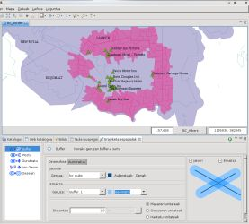
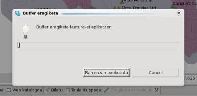
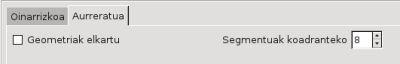
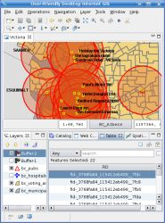

Buffer eragiketa
Aukeratutako geometrien inguruan buffer azalera bat kalkulatzen du.
Buffer eragiketak bektore motako jatorri geruza batetik hartzen ditu featureak eta bere inguruan zehazturiko distantzia batetako buffer azalera bat sortzen du, ondorioa Emaitz Geruza batetan gordez.
Jatorrizko Geruzak featureak aukeratuak baditu, eragiketa beraien aurka burutua izango da, bestalde, geruza guztiko featureak erabiliko dira.
Jatorrizko Geruza ez da inola ere aldatzen. Lehen Emaitz Geruza berri bat sortzen da, edo erabiltzaileak emaitzak gorde ahal diren bektore geruza izatedun eta editatu ahal den bat zehaztu dezake.
Erabilera adibidea
|
Eragiketa espazialen Bistara joan, eta aukeratu Buffer Eragiketen menuan.
Buffer eragiketaren sarrera espezifikoen aukerak agertuko dira.
- Jatorriko Geruza aukeratu
Jatorrik Geruzako hedatze zerrendan, aukeratu buffer azalera sortu nahi duzun Geruza. Lehenik, Geruzen Bistan hautatutako Geruza aukeratuko da.
- Emaitzako Geruza aukeratu
Emaitza Geruzako hedatze zerrendak eragiketaren emaitzak gordetzeko sorturiko Geruzarentzat proposaturiko geruza izen bat edukiko du. Dagoen bezala utzi dezakezu, beste Geruza izen bat idatzi, edo Emaitza Geruzako hedatze zerrendan dagoen Geruza bat aukeratu.
- Distantzia eta Unitateak ezarri
Aukeren atalean, eskalar balioa zehaztu bufferraren azaleraren zabalera kalkulatzeko jatorriko Featuren inguruan, eta aukeratu zein neurri-unitatekoa izan behar den bufferraren zabalera. Maparean edo Geruzaren unitateen artean aukeratu dezakezu edo beste neurri-unitate bat aukeratu Unitateen zerrendatik.
- Eragiketa burutu
Bistako tresnen barratik Exekutatu botoia sakatu eta eragiketa hasiko da.

1 irudia. Buffer eragiketaren erabiltzaile interfazea.
Behin Exekutatu botoia sakatu ondoren, eragiketaren aurrerakuntza prozesu leiho baten agertuko da, 2 irudian agertzen den bezala. Eragiketak tarte bat iraun dezake burutzen, sarrerako geometrien kopuru eta konplexutasunarengatik.

2 irudia. Aurrerakuntza leihoa.
|
Eragiketa bukatu ondoren, emaitza gordetzeko Geruza berri bat sortu bada, automatikoki jadaneko Mapan gehitua izango da.
3 irudiak sortutako Geruza (Buffer-1, orlegiz) erakusten du mapan gehitutakoa, Feature batekin zeinen geometria zehaztutako bufferra lehen geometriei jatorri Featuretan aplikatzearen gehitutako emaitza da.
|

3 irudia. Emaitza Geruza.
Aukera aurreratuak
Buffer eragiketak aukera aurreratu batzuk ditu prozesuaren alde batzuk kontrolatzeko ezarri ahal direnak.
Adibidez, 4 irudiak Geometriak elkartu eta Segmentuak koadranteko aukera aurreratuentzako kontrolak erakusten ditu.

4 irudia. Aukera aurreratuak.
|
- Geometriak elkartu
Geometriak elkartu aukerak jatorriko Feature multzo guztiarentzat gehitutako geometria bakar bat sortu behar den kontrolatzen du, edo alderantziz jatorriko Feature bakoitzeko Emaitza Geruzan Feature berri bat sortu behar den. Lehenik, aukera hau markatua dago, eta ondorioz gehituriko geometria bakar bat sortzen da. 5 irudiak aurreko adibidearen bezalako bufferraren zabalera berdina aplikatzearen emaitza (Buffer-2 geruza, gorriz) erakusten du, baina Geometriak elkartu aukera markatu gabe.
- Segmentuak koadranteko
Segmentuak koadranteko aukerak emaitzako kurba biribiltzeko zenbat segmentu zuzen erabiliko diren kontrolatzea uzten du.
| 
5 irudia. Eragiketaren emaitza Geometriak elkartu markatu gabe.
|
(c) Copyright (c) 2004-2008 Refractions Research Inc. and others.
{kind=link}
{kind=link}

{kind=link}